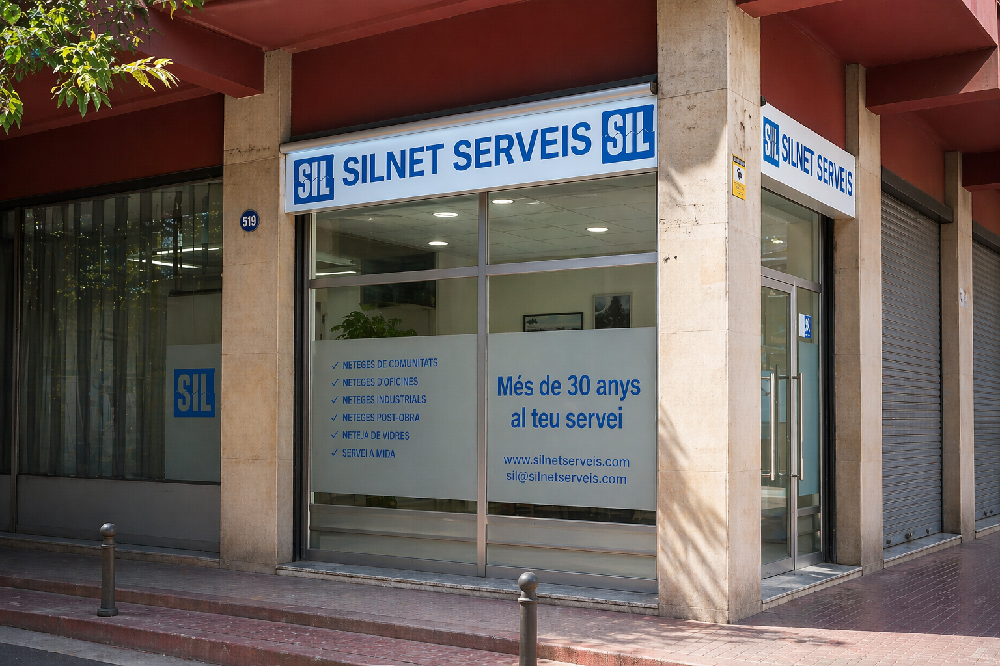

Limpieza profesional en Barcelona
Servicios de limpieza para comunidades, oficinas, locales comerciales y cristales.
Solicitar presupuestoSilnet Serveis
Un servicio adaptado a cada espacio
Ofrecemos servicios profesionales de limpieza para empresas, comunidades y particulares. Trabajamos con una atención personalizada según las necesidades de cada espacio.
- Limpieza de oficinas
- Limpieza de comunidades de vecinos
- Limpieza de locales comerciales
- Limpieza de cristales
- Mantenimiento y limpieza periódica
- Servicios de limpieza personalizados

Servicios
Conoce nuestros servicios
¿Necesitas un presupuesto?
Cuéntanos qué espacio necesitas limpiar y te responderemos con una propuesta adaptada.
Contactar con Silnet